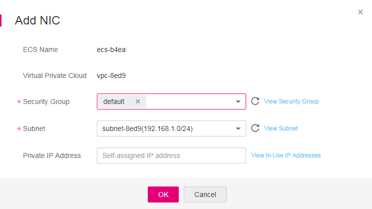

Scenarios
If multiple NICs are required by your ECS, you can add them to your ECS. To add a NIC to the ECS, perform the following operations:
Procedure
- Log in to the management console.
- Click
 in the upper left corner and select your region and project.
in the upper left corner and select your region and project. - Under Computing, click Elastic Cloud Server.
- Click the name of the target ECS.
The page providing details about the ECS is displayed.
- Click the NICs tab. Then, click Add NIC.
- Select the subnet and security group to be added.Figure 1 Selecting the security group and subnet
- Security Group: You can select multiple security groups. In such a case, the access rules of all the selected security groups apply on the ECS.
- Private IP Address: If you want to add a NIC with a specified IP address, enter an IP address into the Private IP Address field.
- Click OK.
Follow-up Procedure
Some OSs cannot identify newly added NICs. In this case, you must manually activate the NICs. Ubuntu is used as an example in the following NIC activation procedure. Required operations may vary among systems. For additional information, see the documentation for your OS.
- Locate the row containing the target ECS and click Remote Login in the Operation column.
Log in to the ECS.
- Run the following command to view the NIC name:
In this example, the NIC name is eth2.
- Run the following command to switch to the target directory:
- Run the following command to open the interfaces file:
vi interfaces
- Add the following information to the interfaces file:
auto eth2
iface eth2 inet dhcp
- Run the following command to save and exit the interfaces file:
:wq
- Run either the ifup eth2 command or the /etc/init.d/networking restart command to make the newly added NIC take effect.
X in the preceding command indicates the NIC name and SN, for example, ifup eth2.
- Run the following command to check whether the NIC name obtained in step 2 is displayed in the command output:
ifconfig
For example, check whether eth2 is displayed in the command output.
- If yes, the newly added NIC has been activated, and no further action is required.
- If no, the newly added NIC failed to be activated. Go to step 9.
- Log in to the management console. Locate the row containing the target ECS, click More in the Operation column, and select Restart.
- Run the following command to check whether the NIC name obtained in step 2 is displayed in the command output:
- If yes, no further action is required.
- If no, contact customer service.